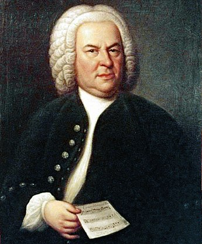

Életrajz
Johann Sebastian Bach (Eisenach, 1685. március 31. (az akkor még ott használt Julián naptár szerint március 21.) – Lipcse, 1750. július 28.) barokk kori német zeneszerző, orgonista, hegedűművész, a zeneművészet kiemelkedő egyénisége, a protestáns egyházi zene jeles képviselője.
A 17. század elejéig visszavezethető Bach dinasztia legjelentősebb alakja volt. Eisenachban született, itt tanult meg zenélni; kezdetben apjától, majd árvaságra jutva bátyjától, Johann Christophtól. 1700-ban, a lüneburgi tanulmányai alatt ismerkedett meg behatóan az orgonával, amelynek csakhamar virtuóz ismerője lett. Előbb a weimari zenekarban játszott, majd az arnstadti templom orgonistája lett. 1707-ben Mühlhausenben vállalt orgonistaállást, itt vette el feleségül másod-unokatestvérét, Maria Barbara Bachot.

...
A következő évben ismét a weimari udvarba került, ezúttal orgonista és kamaramuzsikusi minőségben. 1717-ben elhagyta Weimart, és a kötheni herceg szolgálatába állt. Itt írta kamara- és versenyműveinek jelentős részét. Felesége halála után rövidesen ismét megnősült: Anna Magdalena Wilkent vette el. 1723-ban, a zenerajongó kötheni herceg halála után Bach megpályázta és elnyerte a lipcsei Tamás-templom kántori állását. Életének utolsó negyed századában az iskolai és templomi tevékenysége mellett rengeteget komponált, és elvállalta a Collegium musicum igazgatását is. Mindennapjait azonban az anyagi gondok és az iskola vezetésével való gyakori konfliktusok egyaránt megnehezítették. Rohamosan gyengülő látása miatt halála előtt szemműtétet végeztek el rajta, amely nem sikerült, és megvakult.
...
Hatása a zenekultúrára felmérhetetlen. Művei mély intellektuális tartalmuk és tanító jellegük miatt zeneszerzők nemzedékeire hatottak. Bach művészetében a barokk hangszeres polifónia fejlődésének csúcspontjára érkezett. E stílus legfontosabb műfaja, a fúga általa nyerte el a legtökéletesebb és legkoncentráltabb kifejezőerejét. Munkássága jó részét a vallásos tárgyú kompozíciók alkotják, amelyek alapja a protestáns korál. Művészete a barokk kor zenei törekvéseinek hatalmas összefoglalása, ugyanakkor a XX–XXI. századi kultúrára is elemi hatással van. A Voyager Golden Recordon a legtöbb, 3 műve szerepel; több ezer felhasználással a hangosfilm és a filmművészet egyik leggyakrabban felhasznált szerzője a jelenkorig.